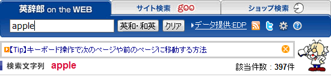

【Tip】「英辞郎 on the WEB」の基本技から応用技、ちょっとしたコツなどをご紹介
■ このページをご覧の方は既にご利用いただいたということになるかと思いますが、「英辞郎 on the WEB」をもっと便利にご利用いただける基本技から応用技、ちょっとしたコツ、新機能などをご紹介するスペースを設置しました。

上の図にあるように、検索窓のすぐ下に「英辞郎 on the WEB」に関連する情報が表示されます。その表示されたテキストをクリックすると、別ウィンドウ（または別のタブ）が開いて、そのトピックの詳細記事を読むことができます。
表示されるテキストは、用意されたいくつかの情報から「英辞郎 on the WEB」で検索するたびにランダムにピックアップされます。この情報が不要な場合は、右端の  をクリックして、この表示枠を閉じることができます。
をクリックして、この表示枠を閉じることができます。
ぜひこの情報をご参考にしていただいて、「英辞郎 on the WEB」のいろいろな使い方を試してみてください。
■ この機能に関する詳細な情報
- 赤の点線で囲まれた領域に情報が表示されます
- 表示される情報は、リンクになっていてクリックできます
- リンクをクリックすると、別のウィンドウ（または別のタブ）が開いて、その情報に関する記事を読むことができます
- 表示される情報は、検索のたびにランダムに更新されます
- すでに見たことがある記事へのリンクも表示される場合があります
- 青の点線で囲まれた をクリックすると、この表示枠を閉じることができます
- 一度閉じた表示枠は、ブラウザを終了するまで、閉じたままの状態を維持します（ブラウザのセッションが終了するまで）
- 表示枠を閉じた場合でも、ブラウザをいったん終了して、ブラウザを再起動すれば、また表示枠は表示されるようになります